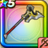

メタスラのオノ
攻略班 6.5点 / たいぼく斬かぶとわりまじん斬りオノまつり天下無双※錬成で強化可能
くわしい特徴
【レベル別習得スキル】 Lv1メタル系+1ダメージ Lv1たいぼく斬（消費MP：5）植物系に威力160%それ以外の系統には130%の斬撃ダメージを与える Lv10かぶとわり（消費MP：8）敵1体に威力150%の斬撃ダメージを与え、たまに守備力を1段階下げる Lv15まじん斬り（消費MP：7）敵1体に30%の確率で斬撃ダメージの会心の一撃を与える。こころや心珠で会心率を上げても影響を受けない。 Lv20オノまつり（消費MP：15）周囲を粉砕して敵全体に威力170%の斬撃ダメージを与える Lv30天下無双（消費MP：19）天下無双の連撃で敵1体に威力55%の斬撃攻撃を6回する Lv35マシン系へのダメージ+10% Lv45会心率+2% Lv50攻撃力+12錬成スキル改1マシン系へのダメージ+20%改2天下無双改（消費MP：30）敵1体に威力85%の斬撃攻撃を6回する改3マシン系へのダメージ+20%改4錬成ぶき特別演出解放・メガモン討伐結果発表時に特別演出が追加・武器の見た目に特別なエフェクトが追加 【限界突破スキル】 1凸スキルの斬撃・体技ダメージ+5% 2凸スキルの斬撃・体技ダメージ+5% 3凸スキルの斬撃・体技ダメージ+5% 4凸スキルの斬撃・体技ダメージ+5%